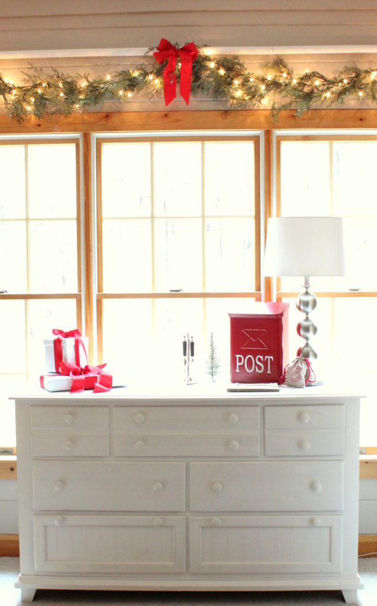
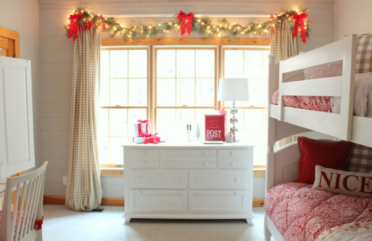

.png)
.PNG)
.PNG)
.PNG)
.PNG)
.PNG)
.JPG)
.JPG)
.PNG)
.PNG)


Welcome back again! I know you are busy with your to-do list, so this will be another short post for you today…and let me warn you. It is a major overdose on red!

We are going to take a peek in our daughter’s bedroom. She was here for her Christmas visit last week since she has to work on Christmas Day itself, so I had to have it ready for sure when she arrived!
Walk in the door, and this is what you see…

For the last 10 years or so, we have always decorated her room with “snow” related items, but this year I decided it was time to change it up some. Her only request was that we have the garland of lights above the window (so she can leave them on at night. 🙂 ) So the garland and bows are always the first thing to be put up in there.

I wanted to go with a “Letters to Santa” idea. Children’s letters frequently begin with Dear Santa, I have been a good girl/boy this year which means that hopefully they are on Santa’s “Nice List.” So I thought a pillow that reverses from nice to naughty (from Homegoods) would be perfect. (And I told our daughter that it had better stay on the nice side! 🙂 )
Over on the dresser the mailbox, letter opener set, and postage bag are being recycled from last year’s mantel, and I had a stack of cards that were on the buffet in the foyer a couple of years ago. (Why buy all new, when you can just reuse things in different places, right?)
There is a lot of red going on in her desk area!
Instead of filling the jar on the shelf there with snowballs, I just used a Valentine’s Day mailbox and a Christmas tree to continue the Letters to Santa idea.
Obviously, the desk is the appropriate place for an actual letter to Santa
(or at least the start of one. 🙂 )
The open book is this sweet one (also from last year) with letters to Santa from 1870-1920:
Dear Santa: Children’s Christmas Letters and Wish Lists, 1870 – 1920
Then over in the corner is the chair you have sit in when you have been “naughty.”
(If that is the punishment, I will happily get on Santa’s list of naughty children. 🙂 )
This red mug from Target was the final touch of Letters to Santa for the room.
Hope you survived the major overdose of red here today! Coming up next will be even more of that holiday color, and I think I am going to go a little overboard in that room with an idea. Here is a hint of things to come in there.
Thank you so much for stopping by today! If you have left a question in a comment or an email recently, I hope to get to all of those at the end of the week. I am doing a little “elf work” elsewhere (and here) but I will get to them. A few of you have asked about the green paint on the wicker in the bathroom from the last post. I have a sprayer, so I had a paint mixed at Lowes and just put it in the sprayer. It is an Olympic Paint called Moss Point Green. Hope that helps!
Until next time…


.PNG)
Dear Kelly,
The jar with the Valentine’s Day mailbox and the Christmas tree is beautiful and your jars always give me so many ideias. A piece of advice… what do you use as snow? (is it sugar? salt?).
Thank you in advance.
Love from Portugal
Catarina
——————————————————————-
Some jars have granulated sugar, some powdered sugar, and some laundry detergent when I can find the brand that is only pure white….usually that is the “free and clear” kind here for those of us with allergies.
Kelly
Cute theme for your daughter’s room. First, I like the idea of lighter garland above the windows. I’m going to copy this idea! The Dear Santa theme is fun, and I especially like the Naughty and Nice pillows and the Santa mug. Cute!
I love your home and your themes throughout the year. This is so much fun and so inspiring! Merry Christmas to you and your family!
Oh my gosh, the cuteness factor is just over the top in here!! Love it – I hope your daughter appreciates all you do to make her room festive for when she comes home!!
Kelly, Kelly
Read me!
I just pulled out some lovely magazines from years past and found CHRISTMAS IDEAS by Better Homes and Gardens Special Interest Publication of December 2015. I saved it because your family and home are featured! You should be proud, lady!
Hope readers read this and check out the issue.
Your daughters room is just perfection! I, like her would definitely leave the lights twinkling overnight 🙂 curling up in the chair …yes, the Naughty one! 🙂 with a mug of hot chocolate, Christmas music playing …and hopefully snow falling gently outside would be a great way to spend an afternoon.
I hope you both had a wonderful “Christmas week” together.
Rosemary
Kelly, I am wondering how your daughter has liked her bunk beds and if she would choose them again. I have 2 granddaughters with limited space and this might be the answer when they get a little older. Also, can you tell me pro and cons to having bunk beds? I would worry about them falling off the top if they were both up there playing. I am sure the beds are hard to make up but anything else we need to know? Thanks much!
———————————————————————
Sorry it has taken me so long to respond. Our daughter has loved her beds. They were great for overnight company when she was growing up. We did not get them for her until she was 10 or so, but the boys had some when they were much younger…I think 6 and 4. They are a royal pain to make up, but other than that they work great. No one has fallen off – ever – because we use the rails up top. And of course they are major space savers. I wish we had purchased a rolling trundle to go under them so that we could have had an additional bed. (Lots of sleepovers here!)
Kelly
How lovely!
Loving the red and white, reminding me of Candy Canes! Don’t think it’s too much at all! What I like about it is that it’s a bright, cherry red, instead of the usual “old world” red you see in so much of the Christmas decor.
I’m on a winter white kick this year, with white ornaments on the tree, snow covered white houses/churches and trees on the mantle, with crystal snowflakes and icicles and silver beaded garland to finish out the theme. I have tons of red from years past, but was getting tired of it all.
I hope your visit with your daughter was all you meant it to be, and that everyone enjoyed their time together.
Enjoy your “Elf-ing”!
Red is the best. Never, ever too much.
Thanks for sharing.
Guess you better add to your TO DO list type of sprayer and tutorial. Every woman will add the sprayer to thrir WISH list.
Proves, one more time how talented and special YOU àre.
Oh what a scrumptious space! Loving the red makes me want to go look for some cherry Wintery red accessories and Christmas Decor!
Thank you again Kelly. I have been waiting for all of your holiday posts. My head is spinning with new ideas for my home. You have triggered so many thoughts in my brain that I want to use so I’ve started making notes for future years as there is no way to use them all in just one year! I love what you do, always. Happy Holidays
Just beautiful Kelly. Your daughter must love it and everythkng you do
Absolutely LOVE everything! Of course, I had to run out and get the mug and ordered the Letters to Santa book because it is so cute I can hardly stand it. LOVE that you have themes for various spaces/rooms! Makes it all so special and also helps you focus on one main idea.
There is NO such thing as too much red at Christmas! And you do red with the best balance I’ve ever seen!
Thank you for yet again inspiring and making the holidays so very special for not only your family, but also for your readers who love everything you do to the nth degree!!! It’s simply a complete joy to see your blog post show up in my inbox! You are the best!
Hugs from the Rockies, Pippa
Kelly,
The letter writing theme in your daughter’s red, Christmas room is just perfect! Thanks for sharing!
Dawn
Kelly I just love all of your rooms. They look so staged and I don’t see the usual things scattered around your daughter’s room. I love how every little thing matches. I enjoy each and every post.
Wow, you’ve done it again! I’d come home to this room and never leave.
I would love to know where you got the calendar blotter on the desk. It is adorable.
And I think I’ll be doing more garland with lights. Beautiful! Thanks for the inspiration.
——————————————————————–
Mechelle, all of our desk calendars were purchased last year at Target. They are from Sugar Paper. They have a new version out this year for 2017, but I have only been able to find them online – not in any of our stores. Guess I had better get to ordering mine before they are gone!
Happy New Year to you. 🙂
Kelly
Kelly,
What daughter coming home for Christmas (even early this year) wouldn’t love walking into her room and seeing it decorated so beautifully. You have a way of making things so special with all of your touches.
Where did you get the comforter and fabric basket liners from? Love them
——————————————————————-
Joy the comforter is a pattern called Dolly, and it is an old one at Pottery Barn. I made the basket liners by taking apart another comforter, and using the fabric from it.
Glad you liked the room.
Kelly
What a lucky daughter to have a mom who does such wonderful things for her! You are creating special memories for your family.👪
It’s perfect! Love that lighted garland…I’m sure your daughter enjoyed all the special touches too! 😉
You can NEVER have too much red! I would love to stay in that room!
I love your daughter’s room, especially with the touches you’ve added this year. The lit garland is wonderful.
xo,
Karen
I want to be your daughter !🎄🎄😀
Love everything’s about this room!
Please. There is no way the words “overdose” + “red” belong in the same sentence! I love her room!
I enjoyed seeing your daughter’s room decorated for Christmas when she returns. I love the idea! Everything is so cute but that mug from Target is adorable!
Kelly,
You always put just enough decorations to keep things classy and yet holiday with out going over the top. Nicely done.
Oh I love your Letters To Santa theme, so perfect and the room is decorated so beautifully.
I’m sure she loved it and enjoyed her Christmas visit! I bet the room looks magical at night with those lights on. I’m still puttering around adding final touches. 🙂 I always love your Christmas tours.